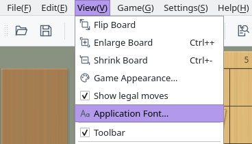
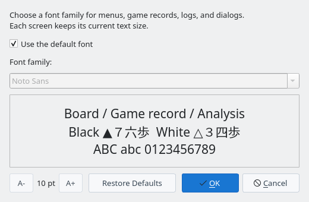
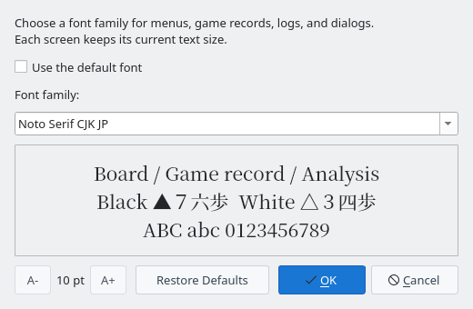
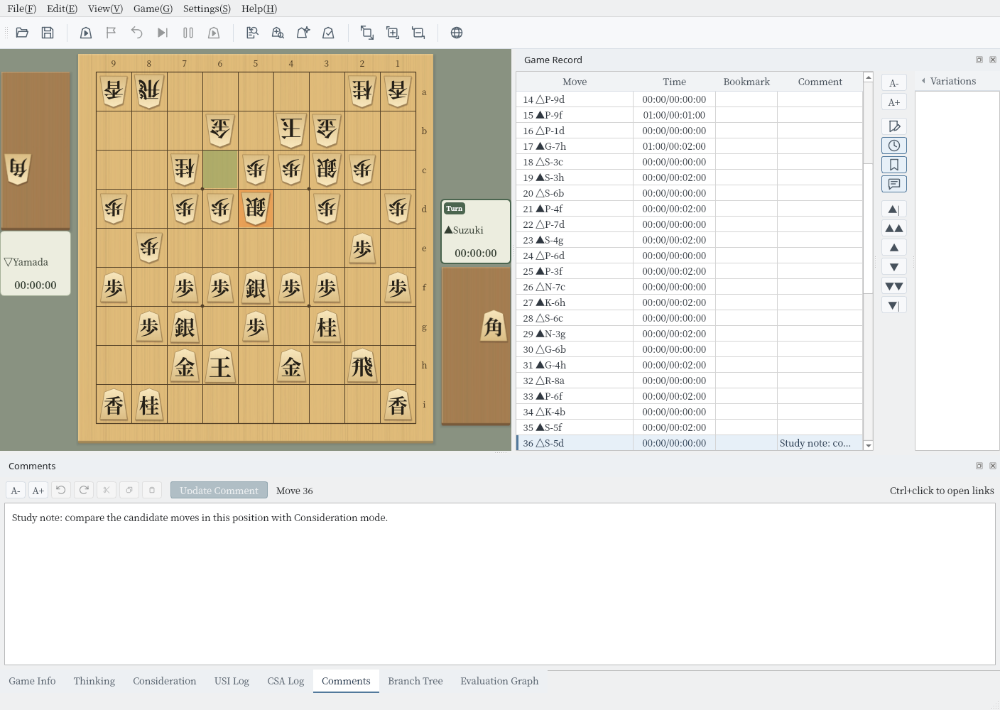

Application Font
Change the font of menus, game records, logs, and dialogs all at once
Screenshots were captured on Linux with the English interface. The font list shows the fonts installed on your computer.
Choose a Font
Set the font for the whole application from View → Application Font…
Open the View menu in the menu bar and choose Application Font… to open the Application Font dialog. The View tab of the menu dock has the same button.
By default, Use the default font is checked, and the default font for your interface language (see the table below) is used.


View menu: Application Font…


Application Font dialog (initial state)
Clear Use the default font to choose from the Font family list. The list shows the fonts installed on your computer.
The preview below the list shows the chosen font in three lines—Board / Game record / Analysis, Black ▲７六歩 White △３四歩, and ABC abc 0123456789—so you can check how letters, digits, and move notation look. The application itself does not change yet.


Noto Serif CJK JP chosen as the font family
Click OK and the whole application switches to the new font right away; no restart is needed. Menus, game records, panels (docks), and dialogs change, and so do the player names, clocks, and coordinates around the board.
The chosen font is saved automatically and used the next time you start the application. Cancel closes the dialog without changing anything.


Main window after clicking OK (Noto Serif CJK JP)
Default Font and Text Size
You can return to the default font at any time, and text sizes stay as each screen sets them
While Use the default font is checked, ShogiBoardQ uses the following fonts for your interface language and operating system.
| Interface language | Windows | macOS | Linux |
|---|---|---|---|
| Japanese | Yu Gothic UI, etc. | Hiragino Sans | Noto Sans CJK JP, etc. |
| Chinese (Simplified) | Microsoft YaHei UI | PingFang SC | Noto Sans CJK SC |
| Chinese (Traditional) | Microsoft JhengHei UI | PingFang TC | Noto Sans CJK TC |
| English | The operating system's default font. Japanese text, such as game records, uses the Japanese default font | ||
If a listed font is not installed, ShogiBoardQ looks for other fonts for the same language (for Japanese, Meiryo UI, IPAexGothic, and others) and uses the operating system's default font if none is found.
Click Restore Defaults to check Use the default font and return the list to the default font. Click OK to switch the whole application back to the default font.
This dialog changes only the font family. Text sizes stay as you set them on each screen, for example with the A- and A+ buttons of the game record or of a dialog.
A- and A+ at the bottom left, with the size in points between them, change the text size of this dialog itself. The text size and the dialog size are kept for next time.
Notes
Missing characters, and moving your settings to another computer
- Missing characters: Characters that the chosen font lacks are filled in from the default font. Even if you choose a Latin-only font, the kanji and kana in game records still appear.
- Communication logs: Fixed-width areas such as the USI Log and CSA Log also use the chosen font. Checking Use the default font again returns them to the original fixed-width font.
- Font not installed: If the saved font is not installed (for example, after you copy your settings file to another computer), the default font is used, and Use the default font is checked when you open the dialog.
- Piece characters: The characters on the pieces are part of the piece images, so they do not change with the font. Choose the look of the pieces in Piece Styles or Game Appearance.